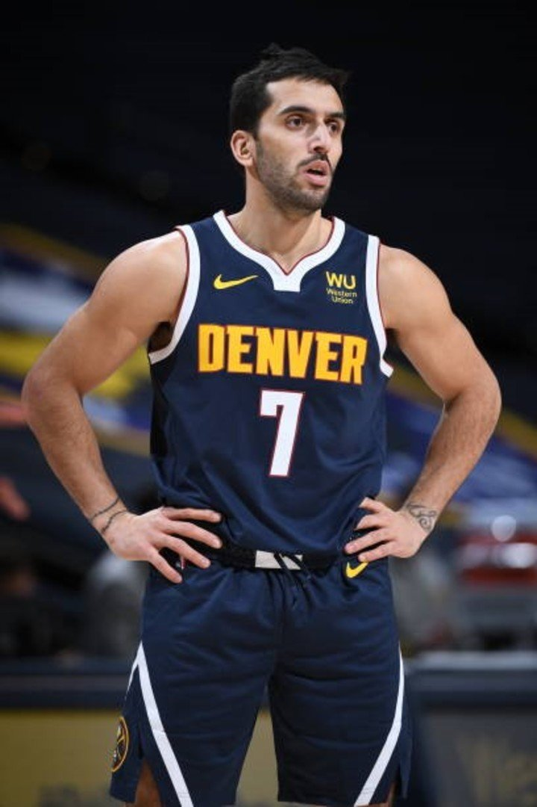

TRAYECTORIA
Campazzo se inició en el baloncesto en el club Municipal de barrio Alta Córdoba a los 4 años, donde jugó hasta alrededor de los 14 años. Luego pasó a formar parte de Unión Eléctrica, otro equipo cordobés, hasta 2007, año en que decide probar suerte y probarse en los principales equipos de la ciudad de Mar del Plata (Peñarol y Quilmes), a lo que luego de pruebas en ambos equipos se suma a las filas de Peñarol de Mar del Plata. Ese mismo año Campazzo lideraría al equipo marplatense para obtener el título provincial y el título nacional en la categoría cadetes (sub-16). En 2008 logró repetir esos mismos títulos pero en la categoría siguiente, Juveniles (sub-18), títulos en los que fue figura y se consagró como una de las promesas del club. Profesional Peñarol: Tras realizar las inferiores en el club, Campazzo debutó el 2 de septiembre de 2008 para Peñarol con una sólida actuación en un partido de Copa Argentina. Durante la temporada 2008/09 participó poco debido a su carácter de jugador juvenil. Sin embargo, finalizando la temporada, el jugador cordobés ganó popularidad y relevancia en el plantel gracias a buenas actuaciones en los play-offs por el campeonato. Estas actuaciones le hicieron ganar la confianza del entrenador Sergio Hernández. En la temporada 2009-10 logró tener más minutos en cancha e incluso fue clave en la final del Torneo Súper 8 2009, donde convirtió dos tiros libres importantes sobre los últimos segundos de juego. Más tarde comenzó la Liga de las Américas, donde "Facu" jugó 40 minutos en los seis partidos que disputó el club, logrando así ser campeón. Durante la liga de ese año cerró una buena actuación, con 928 minutos jugados ya se convirtió en un jugador regular del equipo. Ya para la siguiente temporada de la liga, se afianzó en el equipo en un momento donde el mismo no lograba buenas actuaciones debido a la seguidilla de partidos entre copas y liga. La verdad que la seguidilla de partidos no nos llega en un buen momento. No venimos jugando bien, siempre remamos de abajo con diferencias de 10 o más, pero es cuestión de entrenar, de levantar cabeza y concentración porque nosotros sabemos lo que somos, lo que fuimos y lo que podemos llegar a ser. Tras el retiro de "Tato" Rodríguez, quien era el base titular del equipo, se le abrieron más posibilidades, tal es el caso que el técnico pasó a considerarlo el titular. El base titular de mi equipo es Facundo Campazzo Sergio Santos Hernández Esa temporada fue una de las mejores para Facundo, jugando alrededor de 1800 minutos en 59 partidos contribuyó de manera directa en el tricampeonato del club. Además de ello, fue reconocido como el MVP de las finales. Tras un paso por la selección en 2012, volvió a la liga jugando 52 partidos y destacándose en el equipo. Si bien Peñarol no consiguió títulos en esa temporada, Facundo ya estaba afianzado en el equipo titular. En su última temporada en Peñarol, "Facu" fue nuevamente determinante para la obtención de la Liga Nacional de ese año, donde también fue elegido como MVP de las finales, además de figurar en el quinteto ideal. Real Madrid Antes de que terminase la Liga Nacional 2013-14 se sabía que esa era la última temporada de Campazzo en Peñarol. Solamente restaba conocer el destino, algo que en julio se dio a conocer y más tarde se oficializó. Facundo firmó con el Real Madrid en los primeros días de agosto. A finales de noviembre, cuando venía ganando rodaje (8 partidos en Liga Endesa y 4 en Euroliga), sufrió una lesión en el tobillo que lo dejó marginado el resto del año. Tras su regreso, Facu continuó jugando para el equipo como tercera o cuarta opción de Pablo Laso, llevándolo a jugar poco tiempo y, más tarde, a ser cortado para los playoffs de la liga. Además de ello, pese a estar inscrito, no disputó la Final Four de la Euroliga. UCAM Murcia Tras su primer año en el Real Madrid, siendo el tercer base del equipo, "Facu" es cedido al UCAM Murcia. Antes de llegar al equipo murciano se habían interesado otros en contar con él, entre ellos el Lietuvos Rytas, el Baloncesto Fuenlabrada y el CAI Zaragoza. Campazzo llegará con muchas ganas de reivindicarse, tras haber estado un año sin jugar demasiado. Para su llegada sólo restan definir pequeños detalles, pero ya estamos todos de acuerdo. Tanto el jugador como el Real Madrid, como el Murcia querían que se cierre la operación. Campazzo es un jugador que arrastra al equipo en situaciones límite y un director de juego con muchísima hambre. Es importante que vengan jugadores con hambre y que comprendan el proyecto del equipo. Alejandro Gómez, Director General del Murcia. Facundo fue determinante en el andar del equipo murciano, tal es que fue elegido entre los mejores bases de la liga, y ayudó al equipo a entrar en play-offs, donde perdieron en la primera ronda ante el Real Madrid. Concluida la temporada 2015-16, renueva contrato con el equipo madrileño, que lo vuelve a ceder al Murcia. En la temporada 2016-2017 el UCAM Murcia jugó, además de la Liga Endesa, la Eurocup, siendo esta la primera participación internacional del equipo. En la competencia europea el equipo llegó a la segunda fase, el Top 16, donde quedó eliminado al terminar último de su grupo. En la Liga Endesa el equipo quedó noveno y no accedió a los play-offs. Facundo fue elegido dentro del segundo quinteto ideal del torneo. Regreso al Real Madrid Tras su buena actuación en el UCAM Murcia, Campazzo regresó al Real Madrid. Esta vez tomó un papel más importante que en su paso anterior, hasta convertirse en el primer base del equipo. Fue proclamado MVP de la final en la temporada 2018-19 de la ACB. Empezó la temporada 2019-20 como MVP de la Supercopa de España, reconocimiento que también obtuvo en la Copa del Rey. En febrero de 2020, ante el ALBA Berlín, igualó con 19 el récord de asistencias de la Euroliga. En junio, durante la fase final de la liga ACB, consiguió una valoración de 42 frente al Valencia Basket; esta era la mayor valoración de un jugador madridista desde que Arvydas Sabonis consiguiera 45 en 1995. NBA El 20 de noviembre de 2020 firmó contrato por dos temporadas con los Denver Nuggets de la NBA. Por su condición de rookie fue seleccionado para el evento Rising Stars Challenge celebrado en el All-Star Weekend de la NBA, donde los mejores jugadores de primer y segundo año de Estados Unidos se enfrentan a los del resto del mundo. El 1 de enero de 2022, ante Houston Rockets, registró 22 puntos, su máxima anotación en la NBA hasta ese momento, donde además hizo: 12 asistencias, 5 robos, 4 rebotes y 2 tapones, con un 7/11 tiros de campo, 3/5 tiros de 3 puntos y 5/5 tiros libres. Selección nacional Campazzo ha integrado en varias ocasiones la selección nacional argentina para distintas categorías 'formativas'. Ha formado parte de la selección argentina de cadetes y la selección argentina sub-18, con la que disputó el prestigioso torneo Albert Schweitzer, donde obtuvo el 6º puesto. Fue citado como parte del preseleccionado argentino sub-19. En 2012, se consagró campeón del Campeonato Sudamericano en Chaco, Argentina. El entrenador Julio Lamas lo citó para competir en los Juegos Olímpicos de Londres 2012 con la selección mayor de Argentina. En 2013, formó parte del plantel que participó en el Campeonato FIBA Américas y obtuvo la medalla de bronce, logrando también la clasificación a la Copa Mundial del año siguiente. En 2014, obtuvo la medalla de plata en el Campeonato Sudamericano disputado en Isla Margarita, Venezuela, se consagró campeón en los juegos ODESUR en Chile y quedó preseleccionado para el Campeonato Mundial, realizando la gira previa junto con el primer equipo. En el Campeonato Mundial, Facundo fue parte de todos los partidos argentinos, donde supo jugar compartiendo el puesto con Pablo Prigioni. Terminó con 55 puntos, 9 rebotes y 26 asistencias en 158 minutos jugados. Creo que el equipo merecía llegar más lejos, sobre todo por lo hecho en la primera fase. Queríamos pasar un cruce, por lo menos, pero Brasil fue más. Sabíamos que para ganarle a Brasil debíamos hacer un partido casi perfecto. Durante el primer tiempo ejecutamos parte del plan, pero luego no pudimos detener la ofensiva del rival. Facu Campazzo. En 2015, fue parte del equipo que compitió en el Campeonato FIBA Américas disputado en Ciudad de México obteniendo la clasificación a los Juegos Olímpicos de Río de Janeiro 2016 y el segundo puesto en este torneo. En 2017, fue factor determinante para la victoria en varios encuentros preliminares en el Campeonato FIBA Américas, aportando canastas, tapas, y asistencias determinantes en los últimos segundos de juego llevando a la Argentina a la instancia final contra Estados Unidos y el segundo puesto en este torneo, fue elegido el mejor base de la competición e integrante del mejor quinteto, con promedios de 14 puntos, 6, 6 asistencias, 2, 2 robos y 17, 8 de valoración. En 2019, fue el base titular que comandó a la selección Argentina a la obtención de la medalla de oro en los Juegos Panamericanos de Lima. Campazzo fue elegido el mejor jugador de la final ante Puerto Rico, ganada por 84-66. Además, ese año fue el base titular (con una destacada labor) del plantel que conquistó la medalla de plata en el Mundial de China. En verano de 2021, fue el base titular de la selección argentina en los Juegos Olímpicos de Tokio 2020, como miembros del grupo C, enfrentando a Eslovenia, España y Japón en la primera ronda, donde la selección finalizó en séptimo lugar.
